OCP Access Tracking Dashboard
Who can reach what, on every cluster: for the people who hold access, and for the quarterly review that must prove it.
Application 5.8.0 · chart 0.70.12 · every screenshot is the running dashboard on the lab, 2026-10-08
The problem
9
RoleBindings granting admin, view and edit to groups that have never existed, found on the reference cluster.
oc get rolebinding reports every one of them as healthy.
It looks healthy and grants nobody.
Removing them from the directory revokes nothing: it survives offboarding.
The sync still reports success.
Source: the dashboard's README, the failures it surfaces and the reference cluster's finding
Why now
Everyone can answer “what access do I have, and how did I get it” without a ticket, an oc login with rights they do not have, or a platform engineer.
Auditors need evidence that names the access, the reviewer, the time and the outcome, and shows what changed since the last review. SOC 2, ISO 27001 A.5.18 and A.9.2.5, and SOX centre on dormant, orphaned and privileged access.
The same observed data answers both: one view of access per person, and evidence for the review, drawn from it.
Sources: ACCESS_CONTROL.md (the self tier's purpose) · DESIGN_reporting_service.md (compliance guidance)
The tool
It observes; it never creates or edits a GroupSync CR, a binding or a group.
One dashboard on the host cluster reads every joined cluster, each with that cluster's own token.
People log in the way they already do; the cluster decides what each person may see.
Eleven reports as PDF/A, HTML, CSV and JSON, generated by hand or by a schedule.
Source: README · the chart's templates · the reports catalogue
For everyone
Home is always the reader's own access, administrators included.
It shows the cluster-wide roles, the namespaces they reach and how: through a group, or a grant naming them directly.
A view someone may not open shows a named refusal, never a blank page: an empty audit tab would read as a healthy cluster.
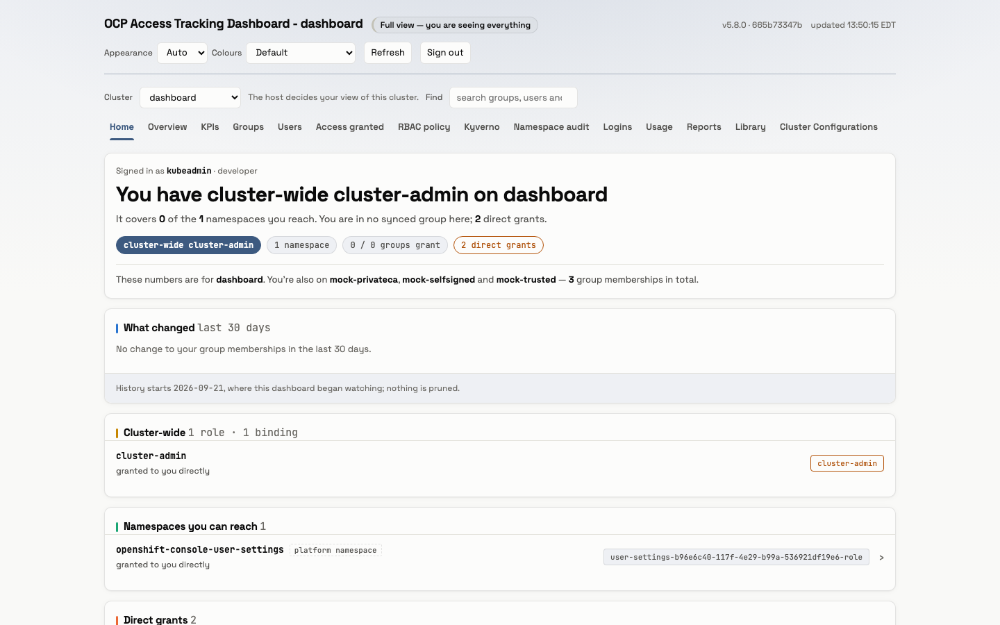
Screenshot: Home, light theme, the lab at 5.8.0 · ACCESS_CONTROL.md and the README for the refusal rule
Namespace audit
Grants that name a person rather than a group survive offboarding, and every group-based review misses them.
The page ranks namespaces by the worst privilege granted and names who is exposed.
Operational goal: zero rows. At zero, one directory change offboards a person from the entire cluster, and an access review that reads clean is clean.
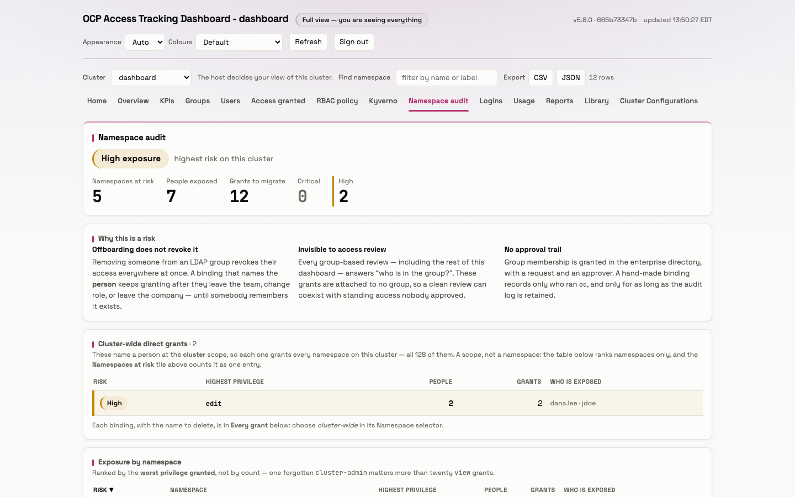
Screenshot: Namespace audit, light theme, the lab at 5.8.0 · the page's own text
Evidence
Who can reach each namespace; the access matrix; privileged access; binding findings.
Groups and their changes; users; login activity; dormant access; sync health.
A one-page compliance snapshot, and an access certification pack for sign-off.
Every document carries the sha256 of its data, the snapshot it was built from, and who generated it.
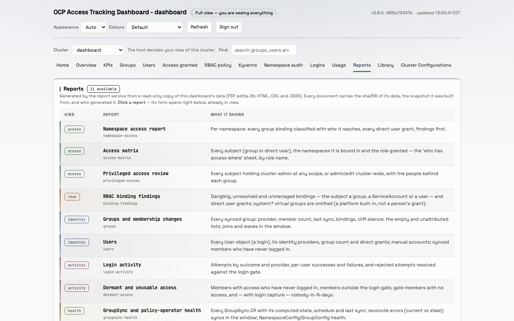
Screenshot: Reports, light theme, the lab at 5.8.0 · docs/reports/README.md
Quarterly review
A campaign with a due date and a named reviewer.
Every group's bindings with empty Approve, Revoke and Comment columns, and the members behind each group.
“This pack records the state the dashboard observed; it does not change anything.” The reviewer signs the last page.
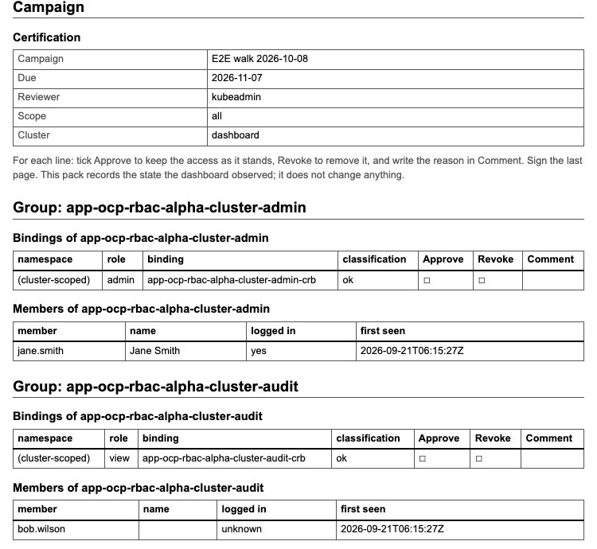
Screenshot: the access-certification report as HTML, generated on the lab at 5.8.0
Provenance
The sha256 of the report's data, the snapshot it was read from, and its schema.
Who generated it, verified by the OpenShift login, and when.
PDF/A-2b for archiving; a report diff answers “what changed since the last review”.
Login attempts are kept 400 days, so a year-over-year review still sees the previous cycle.
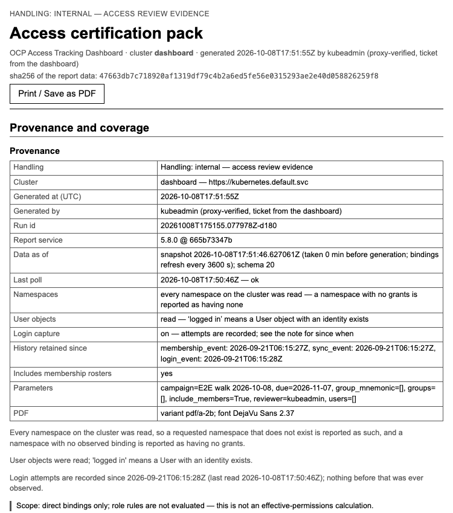
Screenshot: the report's provenance, the lab at 5.8.0 · values.yaml (login retention) · SPEC_F3 (report diff)
Every quarter
quarterly-compliance
0 5 1 1,4,7,10 *
05:00 on 1 January, April, July and October; every run kept 2,555 days, about seven years, and the newest 12 beyond that.
Each scheduled run can send one CloudEvent to a webhook, and an alert fires when a schedule runs late.
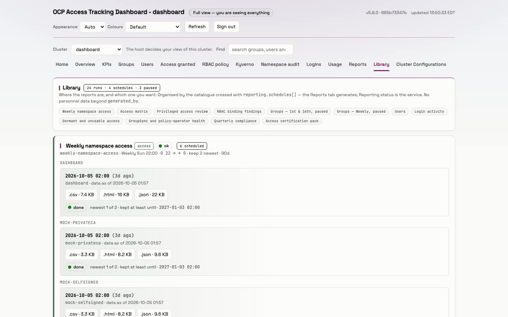
Screenshot: Library, light theme, the lab at 5.8.0 · environments/crc.yaml (the quarterly schedule)
Part 2
Read-only by design: it reads clusters, and it never changes them.
Access tiers
| Tier | Who has it | What they see |
|---|---|---|
| Self | Everyone who can sign in | Their own access: Home, and their own rows |
| Auditor | Can list clusterrolebindings, or is in an auditor group | Every cluster view, Reports and Library |
| Usage | Passes the usage question | The Usage tab |
| Cluster-admin | Can update clusterrolebindings | KPIs and Cluster Configurations, plus all of the above |
A SubjectAccessReview on the cluster decides each tier; the answer is cached 60 s, and any failure falls back to Self.
Sources: ACCESS_CONTROL.md · values.yaml (adminSar, usageAdminSar, clusterAdminSar) · kube.py TierResolver
Architecture
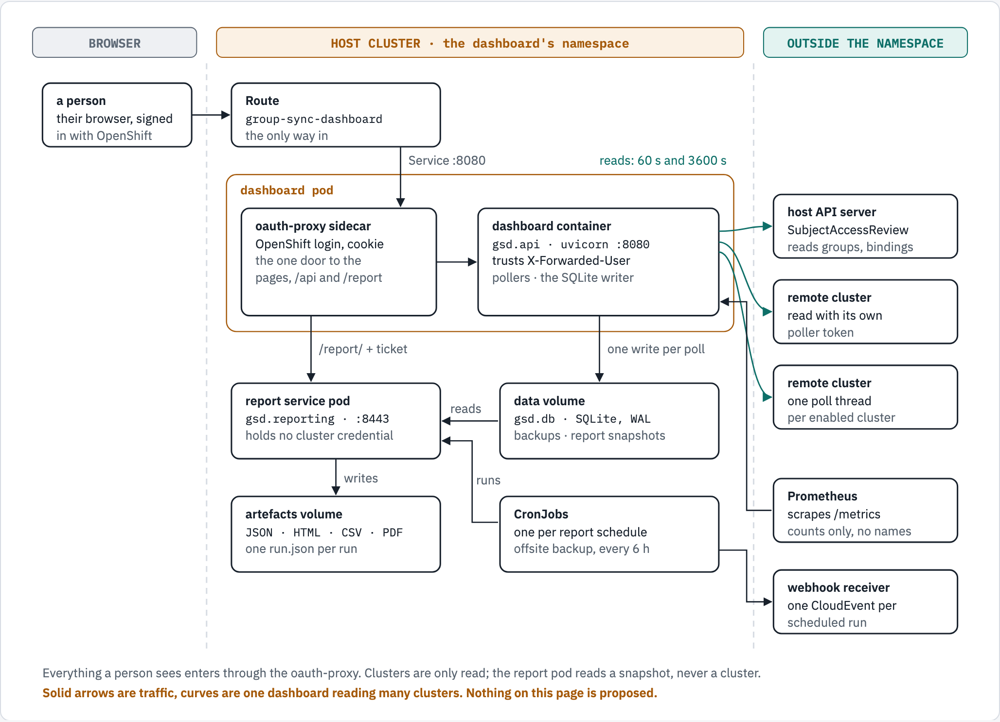
Figure 1 of docs/guides/architecture-overview.md, drawn from the code at 5.8.0
Architecture
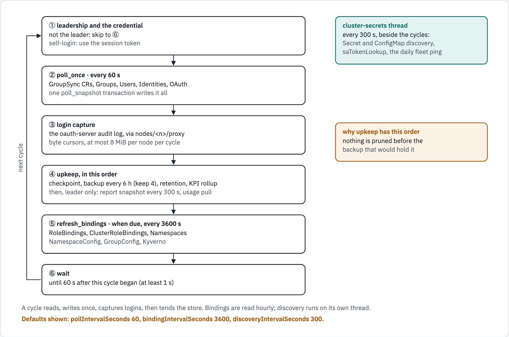
Figure 3 of docs/guides/architecture-overview.md
Architecture
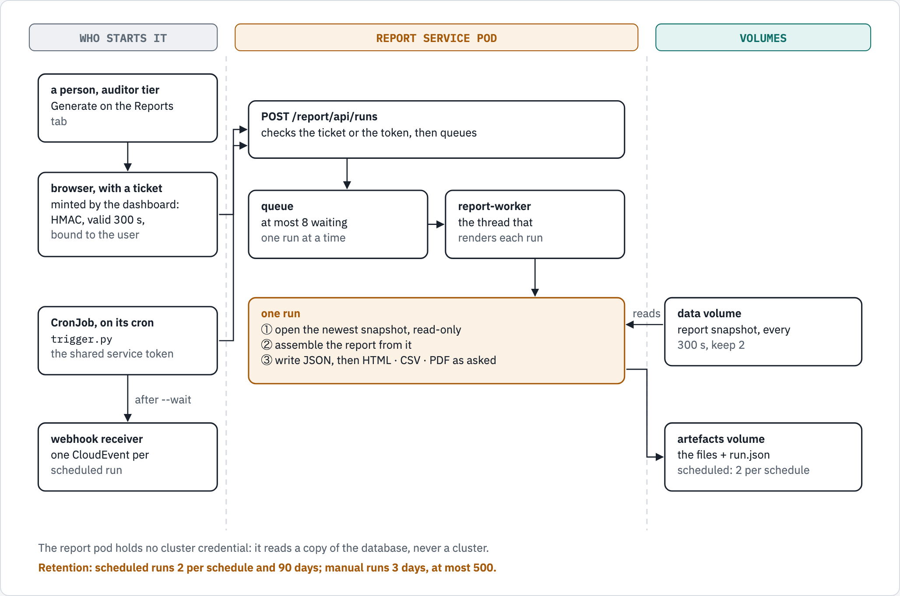
Figure 5 of docs/guides/architecture-overview.md
Security
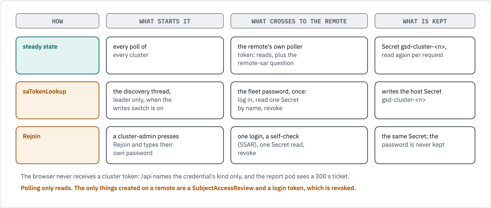
Figure 6 of docs/guides/architecture-overview.md
Operate
One Helm chart, ready for Argo CD; one dashboard pod and one report pod.
A database backup every 6 h with 4 kept, and an offsite copy every 6 h.
Twenty Prometheus alerts, from a cluster that stops answering to a backup or a schedule running late.
The KPIs page shows the system's own health: memory, CPU, throttling, disk, backups.
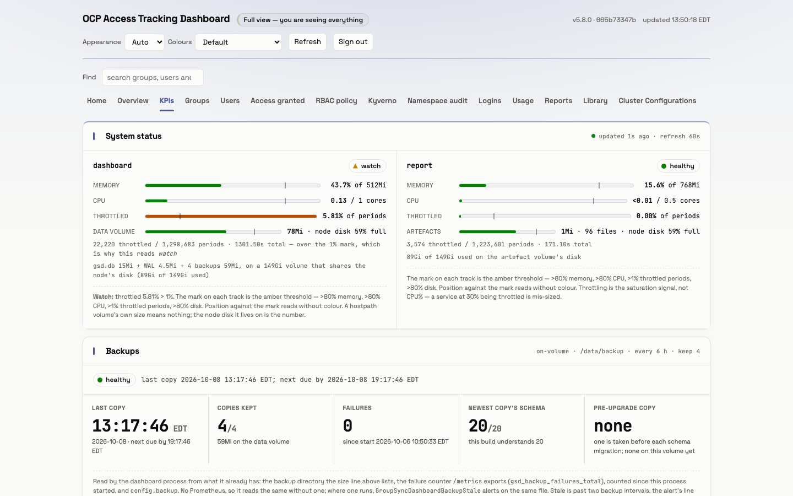
Screenshot: KPIs, light theme, the lab at 5.8.0 · the chart's PrometheusRule and backup settings
Next steps
1
the chart on the host cluster, with Helm or Argo CD.
2
each with its own token: a Secret, saTokenLookup or Rejoin.
3
the groups that review access everywhere.
4
a quarterly compliance schedule, and a webhook for delivery.
Nothing on a cluster changes: the dashboard reads, and the reports record what it read.
Sources: the chart's values.yaml · CLUSTER_CREDENTIALS.md
Thank you
architecture-overview.md
the architecture in seven figures
reference-architecture.md
the full reasoning, claim by claim
ACCESS_CONTROL.md
who sees what, and why
docs/reports/README.md
the eleven reports and their schedules
All documents are in the group-sync-dashboard repository, under docs/